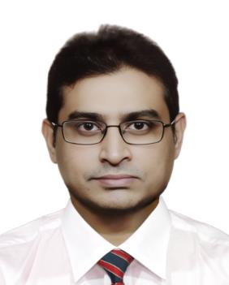

সুদীপ্ত ভট্টাচার্য
Dr. Sudipta Bhattacharya
I teach machines to hear how people feel, in Bengali, Hindi and English.
Associate Professor, Computer Science and Engineering (AIML), Institute of Engineering and Management, Kolkata

Two decades in the classroom, one question in the lab
I have taught computer science to engineering students since 2007, and I joined the Institute of Engineering and Management as Associate Professor in July 2025. Before that I spent eighteen years at Bengal Institute of Technology, where I also ran examinations and led the Institutional Innovation Council.
My research asks how well a machine can recognise emotion in speech when the language has very little labelled data. Most of that work is on Bengali and Hindi, and it now extends to federated learning, multimodal sentiment analysis and Indian classical music.
I am a Fellow of the Institution of Electronics and Telecommunication Engineers (IETE) and a member of the IEM Centre of Excellence for Cloud Computing and IoT.
- NowAssociate Professor, CSE (AIML), IEM Kolkata
- Ph.D.Computer Science and Engineering, GIET University, Odisha
- M.TechInformation Technology, BESU Shibpur
- B.TechInformation Technology, BCET Durgapur
- FellowIETE
- PatentDesign registration 435995: portable machine-learning heart health monitoring device
Research
Speech emotion recognition
Cross-lingual and multilingual models that carry what they learn from one language to another, with a focus on Bengali and Hindi.
Self-supervised speech models
How far frozen encoders such as HuBERT and wav2vec 2.0 can go on small emotion corpora, and what it takes to deploy them.
Federated learning
Training emotion models across institutions and devices without moving the recordings off them.
Multimodal sentiment and emotion
Combining text and audio to read sarcasm, irony and other figurative language.
Explainable AI for health
Ensemble models for heart disease and smartphone addiction that show why they made a prediction.
Music information retrieval
Time and place in Indian classical music, including raga and the hour of performance.
Swarm Learning for Crisis Counselling (SLCC)
I am Principal Investigator on a sanctioned project to build empathetic, decentralised AI for mental health support in crisis zones. It pairs decentralised learning with small language models that run on the device, in English, Bengali and Hindi.
Publications
Journal articles
- 2026Deep multimodal K-fold model for emotion and sentiment analysis in figurative languageBhattacharya, S., Borah, S., & Mishra, B. K. International Journal of Speech Technology, 29, 82. Springer.
- 2026Ensemble and explainable AI-based framework for early prediction of heart diseaseIn pressBhattacharya, S., and co-authors. Recent Advances in Computer Science and Communications. Bentham Science.
- 2024Cross-lingual deep learning model for gender-based emotion detectionBhattacharya, S., Mishra, B. K., Borah, S., Das, N., & Dey, N. Multimedia Tools and Applications, 83(9), 25969–26007.
- 2023Deep transfer learning-based automated identification of bird songDas, N., Padhy, N., Dey, N., Bhattacharya, S., & Tavares, J. M. R.
- 2022Emotion detection from multilingual audio using deep analysisBhattacharya, S., Borah, S., Mishra, B. K., & Mondal, A. Multimedia Tools and Applications, 81(28), 41309–41338.
- 2022A preliminary survey of the literature on multilingual, multimodal speech emotion detection using bibliometric and co-occurrence analysisBhattacharya, S., Mishra, B. K., & Borah, S. Mathematical Statistician and Engineering Applications, 71(3), 1962–1971.
- 2012OLAP based scaffolding to support personalized synchronous e-learningSengupta, S., Mukherjee, B., Bhattacharya, S., & Dasgupta, R. International Journal of Managing Information Technology, 4(3), 71.
- 2012A framework for automatic generation of answers to conceptual questions in FAQ based question answering systemPal, S., Bhattacharya, S., Datta, I., & Chakravorty, A. International Journal of Advanced Research in Artificial Intelligence, 1(2).
Conference papers
- 2026A deployment-oriented recipe for low-resource speech emotion recognition: frozen HuBERT, layer-weighted pooling, and realistic-noise augmentationAcceptedMINDS 2026, NSHM Knowledge Campus, Durgapur, 19–20 November 2026.
- 2026Predicting smartphone addiction using TabPFN-2.5 with explainable AIAcceptedBhattacharya, S., Chakraborty, S., Das, S., Dutta, S., Josh, R., Datta, S., & Borah, S. International Conference on AI and Robotics (AIR 2026), Volume 2. Lecture Notes in Networks and Systems, Springer.
- 2023Multilingual and cross lingual audio emotion analysis using RNNBhattacharya, S., Mishra, B. K., & Borah, S. International Conference on Advances in IoT and Security with AI, pp. 171–188. Springer Nature Singapore.
- 2022Deep analysis for speech emotion recognizationBhattacharya, S., Borah, S., Mishra, B. K., & Das, N. ICCSEA 2022, pp. 1–6. IEEE.
- 2021Deep classification of sound: a concise reviewBhattacharya, S., Das, N., Sahu, S., Mondal, A., & Borah, S. First Doctoral Symposium on Natural Computing Research (DSNCR 2020), pp. 33–43. Springer Singapore.
- 2010A method to extract features from handwritten signature image for signature verificationBiswas, S., Bhattacharya, S., & Sahu, S. NCETACS-2010, St. Anthony’s College, Shillong, pp. 9–10.
- 2009An analytical approach for tracking the tumor systems dynamicsBhattacharya, S., & Majumder, D. World Congress on Nature & Biologically Inspired Computing (NaBIC), pp. 92–97. IEEE.
The full list, with citations, is on Google Scholar.
Open code
kfold-multimodal-emotion-sentimentCode and data notes for the 2026 International Journal of Speech Technology paper on CMU-MOSEI.federated-ser-fedavg-fedproxFedAvg and FedProx compared for speech emotion recognition across English, Bengali and Hindi.SER_Multimodal_Analysis1Frozen HuBERT recipe for low-resource speech emotion recognition on IEMOCAP and RAVDESS.
More repositories are on GitHub.
Teaching
- Data Structures and Algorithms
- Programming for Problem Solving using C
- Computer Vision
- Machine Learning and Deep Learning
- Operating Systems, Computer Networking and Computer Organization
Online course
I created Python for Data Science Basics on Udemy for learners starting out in data science.
Invited talks
- How to write a publishable review paper: common mistakes and proven strategies. Winter Internship (Research) Program, NextGen Research and Innovation Hub, January 2025.
- LaTeX for scientific writing: a powerful tool for researchers. Innovation Hub, January 2025.
- Invited talk on data science methods, ICDSM-24, December 2024.
Roles at IEM
- Subject Matter Expert for Python and C across the IEM and UEM group
- Member, IEM Centre of Excellence for Cloud Computing and IoT
- Member, Departmental Examination Cell
- Member, Departmental IQAC Cell
- Social Media Adviser, IEM IEDC
- IETE Student Forum
Career
Associate Professor, CSE (AIML), Institute of Engineering and Management, Kolkata
Technical Advisor, Weber Web Solutions
Co-founder, Learnin28days, a learning platform for CSE students and professionals
Co-founder, Lokalchat, e-commerce
Assistant Professor (Selection Grade from 2021), CSE and IT, Bengal Institute of Technology
Write to me
I welcome research collaborations, invited talks, and questions from students about speech and language AI.
bhattacharya.sudipta@gmail.com